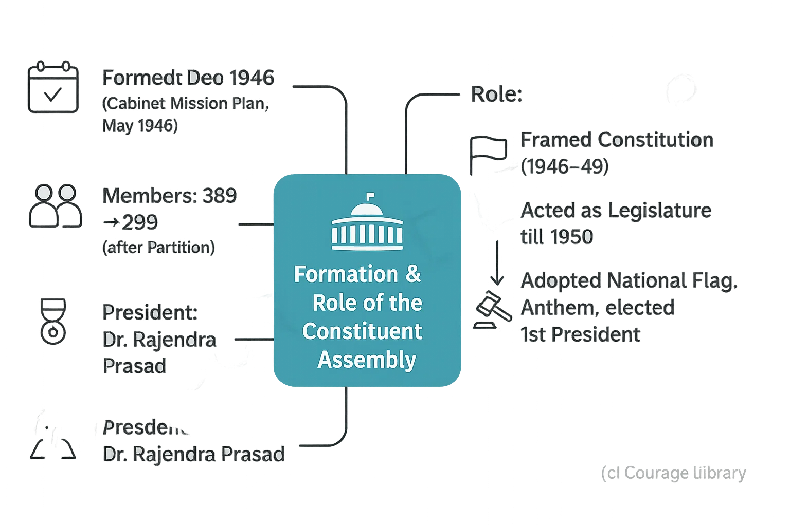

SSC CGL - Detailed Guide 2025
Self-Paced Course
Making of Constitution
Reference: Lucent GK, NCERT Class 6–12
1. Historical Background (Important Acts: 1773–1947)
These Acts shaped the administrative framework that eventually led to the framing of the Indian Constitution.
| Year | Act Name | Key Features |
|---|---|---|
| 1773 | Regulating Act | First step towards British control; established Governor-General of Bengal (Warren Hastings). |
| 1784 | Pitt's India Act | Dual control: Company + British Govt.; created Board of Control. |
| 1813 | Charter Act | End of East India Company's trade monopoly. |
| 1833 | Charter Act | Centralization of power; Governor-General of India created (William Bentinck). |
| 1853 | Charter Act | Open civil services to Indians. |
| 1858 | Govt. of India Act | End of Company rule; direct Crown rule; Secretary of State for India created. |
| 1861 | Indian Councils Act | Legislative councils established. |
| 1892 | Indian Councils Act | Increased Indian participation in councils. |
| 1909 | Morley-Minto Reforms | Introduced separate electorates for Muslims. |
| 1919 | Montagu-Chelmsford Reforms | Introduced dyarchy in provinces. |
| 1935 | Government of India Act | Federal structure proposed; provincial autonomy; basis of modern Indian Constitution. |
| 1947 | Indian Independence Act | India became independent; power transferred to Constituent Assembly. |
Note: The Government of India Act 1935 is considered the "blueprint" of the Indian Constitution.
Formation & Role of the Constituent Assembly
- Formed: December 1946
- Under: Cabinet Mission Plan (May 1946)
- Total Members: 389 (later 299 after Partition)
- First Meeting: 9 Dec 1946 (Chairman: Dr. Sachchidananda Sinha – temporary)
- Permanent Chairman (President): Dr. Rajendra Prasad
Role of the Assembly:
- Framed the Constitution (1946–1949)
- Acted as Legislature of India till 1950
- Adopted National Flag, National Anthem, and elected first President

Committees Formed: 22 in total
Important ones:
| Committee | Chairman |
|---|---|
| Drafting Committee | Dr. B. R. Ambedkar |
| Union Constitution Committee | Jawaharlal Nehru |
| Union Powers Committee | Jawaharlal Nehru |
| Provincial Constitution Committee | Sardar Vallabhbhai Patel |
| Advisory Committee on Fundamental Rights | Sardar Vallabhbhai Patel |
| Steering Committee | Dr. Rajendra Prasad |
3. Drafting Committee & Members
Drafting Committee was formed on 29 August 1947.
- Chairman: Dr. B. R. Ambedkar (Father of the Indian Constitution)
Other Members:
| Member Name | Known For |
|---|---|
| Alladi Krishnaswami Ayyar | Renowned lawyer & legal expert |
| N. Gopalaswami Ayyangar | Minister without portfolio in Nehru's Cabinet |
| K. M. Munshi | Famous writer and nationalist leader |
| Mohammad Saadullah | Former Premier of Assam |
| B. L. Mitter (later replaced by Madhav Rao) | Legal expert |
| D. P. Khaitan (died in 1948, replaced by T. T. Krishnamachari) | Business & law |
Work Done:
Drafting Committee prepared the first draft in Feb 1948 and second in Oct 1948.
4. Adoption and Enforcement
| Event | Date |
|---|---|
| Draft Constitution completed | 26 Nov 1949 |
| Constitution Adopted | 26 Nov 1949 (marked as Constitution Day) |
| Constitution Came into Effect | 26 Jan 1950 |
Why 26 Jan?
To commemorate the 1930 Declaration of Purna Swaraj (Complete Independence Day) by Indian National Congress in Lahore session.
On this day:
- India became a Republic.
- Dr. Rajendra Prasad became the first President of India.
- British monarchy officially ended.
- Government of India Act 1935 was replaced.
Developed By Jan Mohammad
Next
Start Your SSC CGL Journey Now!
Join Courage Library to experience disciplined study and expert support.
Be a Couragian!